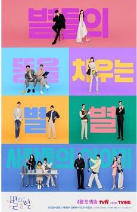

Estrenos de kdramas en abril 2022
Estos son kdramas, dramas coreanos o series coreanas, que se estrenan en abril 2022. Hay muuucha cosa, mucha, y para todos los gustos: un extra de familiares con toques makjang, fantasía, comedias románticas, un poquito de terror y diría que un thriller cómico fusión
Yo le tengo ganas a Our blues porque amo el cast, y también a shooting stars. Me llama mucho la atención Business Proposal, que llegara a Netflix Argentina este mes. Sin mas, los dejo con la informacion. A continuación les presento algunos de los dramas que se estrenan este mes:
Our Blues
- Fecha de estreno: 9 de abril
- Genero: vida cotidiana
- Plataformas: Netflix
Son muchas historias separadas de gente que se encuentra en la isla de Jeju. Dong Suk (Lee Byung Hun) es un vendedor ambulante foráneo de la isla de Jeju. Termina enredándose con Sun Ah (Shim Min Ah), que recién se acaba de mudar a la isla.
También está Han Soo (Cha Seung Won), nació en Jeju pero se mudó a otro continente y ahora ha vuelto: es un hombre totalmente de ciudad. Ahí se encuentra ocn su primer amor: Eun Hee (Lee Jung Eun). Son amigos de Go Ra Min (Uhm Jung Hwa), que ha regresado a Jeju porque se ha cansado de la ciudad
Lee Young Ok (Han Ji Min) es una buceadora que se acaba de mudar a Jeju, perseguida por muchos rumores. Allí conoce a Park Jung Yoon (Kim Woo Bin), como capitán de un barco: un hombre de buen corazón que está buscando a alguien que se quede en Jeju.
Shooting stars
- Fecha de estreno: 22 de abril
- Genero: Romcom
- Plataformas: Viki
Es un drama que gira en torno a las bambalinas del mundo del entretenimiento. Él es una estrella hallyu famosa: es querido por su lado amable y agradable, pero también tiene malas pulgas y un temperamento expliso. Ella es la jefa de relaciones públicas y, aunque se pelean continuamente, parece que el roce hace el cariño.
«Shooting Stars» tiene en la dirección del PD Lee Soo Hyun de «Find Me in Your Memory», 2020; «The Wtich’s Diner» 2021. El guión es el primero del escritor Choi Young Woo. Son 16 episodios de Comedia, Romance y Drama. Ah!!Y habrá muchos cameos de estrellas reconocidas a los largo de la historia!! Para empezar vimos a Park Jung Min, Seo Yi Sook, Kim Seul Gi y Yoon Byung Hee